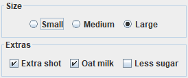

เมื่อจบบทนี้ นิสิตจะทำได้- เลือก JLabel, JButton, JTextField และ JTextArea
- ใช้ JScrollPane กับเนื้อหาที่ยาว
- รับตัวเลือกด้วย JComboBox, JCheckBox, JRadioButton
- เลือกระหว่าง Flow, Border, Grid และ Box layout แล้วประกอบหลาย panel
15. ประกอบหน้าจอจากชิ้นส่วน Swing
หน้าจอแบ่งเป็น component ที่แสดงหรือรับข้อมูล กับ container ที่บรรจุ component อีกที แต่ละ container มี layout manager คำนวณตำแหน่งให้ตามขนาดหน้าต่าง ทำให้หน้าจอยังดูดีเมื่อผู้ใช้ย่อขยายหน้าต่างหรือใช้ฟอนต์ต่างกัน บทนี้ยังไม่ทำให้ปุ่มตอบสนอง (บทที่ 16) แต่บางภาพจำลองการพิมพ์หรือเลือกค่าเพื่อให้เห็นสถานะของ component
15.1 JLabel, JButton และ JPanel
| Component | ใช้ทำอะไร | เมธอดที่ใช้บ่อย |
|---|
JLabel | แสดงข้อความ (ผู้ใช้แก้ไม่ได้) | setText, getText, setFont, setForeground |
JButton | ปุ่มให้ผู้ใช้กด | setText, setEnabled, setToolTipText, addActionListener (บทที่ 16) |
JPanel | container จัดกลุ่ม | add, setLayout, setBorder, setBackground |
ตัวอย่าง 15.1.1 · label และปุ่มหลายสถานะ พื้นฐาน
แนวคิด: ปุ่มที่ setEnabled(false) จะเป็นสีเทาและกดไม่ได้ ใช้บอกผู้ใช้ว่ายังทำขั้นนั้นไม่ได้
LabelButtons.java
import javax.swing.*;
public class LabelButtons {
public static void main(String[] args) {
SwingUtilities.invokeLater(() -> {
JFrame frame = new JFrame("Step 1 of 3");
frame.setDefaultCloseOperation(JFrame.EXIT_ON_CLOSE);
JPanel panel = new JPanel();
panel.add(new JLabel("Welcome to registration"));
JButton back = new JButton("Back");
back.setEnabled(false); // ปุ่มกดไม่ได้ (สีจาง)
JButton next = new JButton("Next");
// ข้อความเมื่อชี้เมาส์ค้าง
next.setToolTipText("Go to step 2");
panel.add(back);
panel.add(next);
frame.add(panel);
frame.pack();
frame.setVisible(true);
});
}
}
หน้าต่างที่ได้ (ภาพจากโปรแกรมจริง) อธิบายทีละขั้น- Back ถูกปิดเพราะอยู่หน้าแรก
- Next มี tooltip แสดงเมื่อเอาเมาส์ชี้
ตัวอย่าง 15.1.2 · label แบบ HTML และการจัดแนว ต่อยอด
แนวคิด: JLabel รับข้อความ HTML อย่างง่ายได้ (ขึ้นบรรทัดด้วย <br>, ตัวหนา, สี) และจัดแนวข้อความด้วย SwingConstants
HtmlLabel.java
import javax.swing.*;
import java.awt.*;
public class HtmlLabel {
public static void main(String[] args) {
SwingUtilities.invokeLater(() -> {
JFrame frame = new JFrame("Notice");
frame.setDefaultCloseOperation(JFrame.EXIT_ON_CLOSE);
// JLabel ใช้ HTML จัดรูปแบบได้
JLabel label = new JLabel("<html><b>Exam schedule</b><br>Midterm: 12 Oct<br>"
+ "<font color='red'>Final: 15 Dec</font></html>");
// จัดข้อความกึ่งกลาง
label.setHorizontalAlignment(SwingConstants.CENTER);
label.setBorder(BorderFactory.createEmptyBorder(12, 30, 12, 30));
frame.add(label, BorderLayout.CENTER);
frame.pack();
frame.setVisible(true);
});
}
}
หน้าต่างที่ได้ (ภาพจากโปรแกรมจริง) อธิบายทีละขั้น- ข้อความขึ้นต้น <html> จะถูกตีความเป็น HTML
- <br> ขึ้นบรรทัด <b> ตัวหนา <font color> สี
- ใช้เท่าที่จำเป็น: ข้อความธรรมดาอ่านและดูแลง่ายกว่า
ลองคิดก่อน · componentต้องการแสดงผลลัพธ์การคำนวณที่ผู้ใช้ไม่ควรแก้ไข ควรใช้ JLabel หรือ JTextField
ดูคำตอบ
JLabel เหมาะที่สุด (หรือ JTextField ที่ setEditable(false) ถ้าต้องการให้ผู้ใช้คัดลอกข้อความได้)
15.2 JTextField, JTextArea และ JScrollPane
JTextField เหมาะกับข้อความบรรทัดเดียว เช่น ชื่อหรือรหัส; JPasswordField สำหรับรหัสผ่าน; JTextArea รับข้อความหลายบรรทัด และควรใส่ใน JScrollPane เพื่อเลื่อนดูเมื่อข้อความยาว ค่าที่อ่านได้จากช่องเหล่านี้เป็น String เสมอ (ตัวเลขต้อง parse แบบบทที่ 9)
ตัวอย่าง 15.2.1 · ช่องกรอกบรรทัดเดียวพร้อมข้อความที่ผู้ใช้พิมพ์ พื้นฐาน
แนวคิด: JTextField(คอลัมน์) กำหนดความกว้างโดยประมาณ ภาพนี้จำลองว่าผู้ใช้พิมพ์ข้อมูลลงไปแล้ว
TextFields.java
import javax.swing.*;
public class TextFields {
public static void main(String[] args) {
SwingUtilities.invokeLater(() -> {
JFrame frame = new JFrame("Student");
frame.setDefaultCloseOperation(JFrame.EXIT_ON_CLOSE);
JPanel panel = new JPanel();
panel.add(new JLabel("Name:"));
// ช่องกรอกกว้างประมาณ 12 ตัวอักษร
panel.add(new JTextField(12));
panel.add(new JLabel("ID:"));
panel.add(new JTextField(7));
frame.add(panel);
frame.pack();
frame.setVisible(true);
});
}
}
หน้าต่างที่ได้ (ภาพจากโปรแกรมจริง) อธิบายทีละขั้น- ช่องแรกกว้าง 12 คอลัมน์ ช่องที่สองกว้าง 7
- ค่าที่พิมพ์อ่านได้ด้วย
getText() (บทที่ 16–17)
ตัวอย่าง 15.2.2 · JTextArea ใน JScrollPane ต่อยอด
แนวคิด: ตั้งจำนวนแถว/คอลัมน์ เปิดการตัดคำด้วย setLineWrap(true) และ setWrapStyleWord(true) แล้วห่อด้วย JScrollPane
NotesArea.java
import javax.swing.*;
import java.awt.*;
public class NotesArea {
public static void main(String[] args) {
SwingUtilities.invokeLater(() -> {
JFrame frame = new JFrame("Notes");
frame.setDefaultCloseOperation(JFrame.EXIT_ON_CLOSE);
// 5 แถว 24 คอลัมน์
JTextArea notes = new JTextArea(5, 24);
// ตัดบรรทัดเมื่อยาวเกิน
notes.setLineWrap(true);
// ตัดที่ช่องว่างระหว่างคำ
notes.setWrapStyleWord(true);
StringBuilder sb = new StringBuilder();
for (int i = 1; i <= 8; i++) {
sb.append("Line ").append(i).append(": remember to practice Java every day.\n");
}
// ใส่ข้อความทั้งหมด
notes.setText(sb.toString());
// เลื่อนเคอร์เซอร์ไปต้นข้อความ
notes.setCaretPosition(0);
// ห่อด้วย JScrollPane จึงเลื่อนดูได้
frame.add(new JScrollPane(notes), BorderLayout.CENTER);
frame.add(new JLabel("8 lines - scroll to read more"), BorderLayout.SOUTH);
frame.pack();
frame.setVisible(true);
});
}
}
หน้าต่างที่ได้ (ภาพจากโปรแกรมจริง) อธิบายทีละขั้น- JTextArea(5, 24) แสดง 5 แถว กว้าง 24 คอลัมน์
- ข้อความ 8 บรรทัดยาวเกิน จึงมี scrollbar
setCaretPosition(0) เลื่อนไปบนสุด- ถ้าไม่ห่อด้วย JScrollPane หน้าต่างจะขยายหรือข้อความล้น
ตัวอย่าง 15.2.3 · ช่องอ่านอย่างเดียว ช่องรหัสผ่าน และการจัดแนว ประยุกต์
แนวคิด: setEditable(false) ใช้แสดงค่าที่คำนวณได้, JPasswordField แสดงจุดแทนตัวอักษร, setHorizontalAlignment จัดตัวเลขชิดขวา
FieldVariants.java
import javax.swing.*;
import java.awt.*;
public class FieldVariants {
public static void main(String[] args) {
SwingUtilities.invokeLater(() -> {
JFrame frame = new JFrame("Field types");
frame.setDefaultCloseOperation(JFrame.EXIT_ON_CLOSE);
// ตาราง 3 แถว 2 คอลัมน์
JPanel panel = new JPanel(new GridLayout(3, 2, 6, 6));
panel.setBorder(BorderFactory.createEmptyBorder(10, 10, 10, 10));
JTextField total = new JTextField("1,250.00");
// อ่านอย่างเดียว
total.setEditable(false);
// ตัวเลขชิดขวา
total.setHorizontalAlignment(JTextField.RIGHT);
panel.add(new JLabel("Total (read-only):"));
panel.add(total);
panel.add(new JLabel("Password:"));
// ช่องรหัสผ่าน แสดงเป็นจุด
panel.add(new JPasswordField(10));
JTextField qty = new JTextField("3");
qty.setHorizontalAlignment(JTextField.RIGHT);
panel.add(new JLabel("Quantity:"));
panel.add(qty);
frame.add(panel);
frame.pack();
frame.setVisible(true);
});
}
}
หน้าต่างที่ได้ (ภาพจากโปรแกรมจริง)Field types

อธิบายทีละขั้น- ช่อง Total พื้นเทา แก้ไม่ได้ แต่คัดลอกได้
- JPasswordField ซ่อนตัวอักษร — อ่านค่าด้วย getPassword() ซึ่งคืน char[]
- GridLayout(3, 2) จัดป้ายกับช่องเป็นคู่ ๆ
ลองคิดก่อน · เลือก componentเลือก component สำหรับ: ที่อยู่ (หลายบรรทัด), รหัสไปรษณีย์, รหัส PIN, ผลรวมที่คำนวณได้
ดูคำตอบ
JTextArea ใน JScrollPane, JTextField, JPasswordField, JLabel หรือ JTextField ที่ setEditable(false)
15.3 ตัวเลือก: JComboBox, JCheckBox และ JRadioButton
| Component | เหมาะกับ | อ่านค่า |
|---|
JComboBox<String> | เลือก 1 จากรายการยาว (เมนูดรอปดาวน์) | getSelectedItem(), getSelectedIndex() |
JRadioButton + ButtonGroup | เลือก 1 จากตัวเลือกน้อย ๆ ที่อยากให้เห็นทั้งหมด | isSelected() |
JCheckBox | เปิด/ปิดแต่ละตัวเลือกอิสระ (เลือกได้หลายอัน) | isSelected() |
ตัวอย่าง 15.3.1 · JComboBox จากอาเรย์ พื้นฐาน
แนวคิด: สร้าง combo box จากอาเรย์ String ภาพจำลองว่าผู้ใช้เลือกรายการที่ index 2
FacultyCombo.java
import javax.swing.*;
public class FacultyCombo {
public static void main(String[] args) {
SwingUtilities.invokeLater(() -> {
JFrame frame = new JFrame("Faculty");
frame.setDefaultCloseOperation(JFrame.EXIT_ON_CLOSE);
// ตัวเลือกจากอาเรย์
String[] faculties = {"Science", "Engineering", "Education", "Arts"};
// <String> = ชนิดของตัวเลือก
JComboBox<String> combo = new JComboBox<>(faculties);
JPanel panel = new JPanel();
panel.add(new JLabel("Faculty:"));
panel.add(combo);
frame.add(panel);
frame.pack();
frame.setVisible(true);
});
}
}
หน้าต่างที่ได้ (ภาพจากโปรแกรมจริง)Faculty

อธิบายทีละขั้นJComboBox<String> ใช้ generic เหมือน ArrayList- ค่าเริ่มต้นเลือกตัวแรก
- อ่านค่าด้วย
(String) combo.getSelectedItem()
ตัวอย่าง 15.3.2 · radio button ในกลุ่มเดียวกัน และ check box ต่อยอด
แนวคิด: radio ใน ButtonGroup เดียวกันเลือกได้ทีละอัน ส่วน check box เลือกได้อิสระ
DrinkOptions.java
import javax.swing.*;
import java.awt.*;
public class DrinkOptions {
public static void main(String[] args) {
SwingUtilities.invokeLater(() -> {
JFrame frame = new JFrame("Drink options");
frame.setDefaultCloseOperation(JFrame.EXIT_ON_CLOSE);
// true = เลือกไว้ก่อน
JRadioButton small = new JRadioButton("Small", true);
JRadioButton medium = new JRadioButton("Medium");
JRadioButton large = new JRadioButton("Large");
// ButtonGroup: เลือกได้ทีละหนึ่ง
ButtonGroup sizes = new ButtonGroup();
sizes.add(small);
sizes.add(medium);
sizes.add(large);
JPanel sizePanel = new JPanel();
// กรอบพร้อมหัวข้อ
sizePanel.setBorder(BorderFactory.createTitledBorder("Size"));
sizePanel.add(small);
sizePanel.add(medium);
sizePanel.add(large);
JPanel extraPanel = new JPanel();
extraPanel.setBorder(BorderFactory.createTitledBorder("Extras"));
// check box เลือกได้หลายอัน
extraPanel.add(new JCheckBox("Extra shot"));
extraPanel.add(new JCheckBox("Oat milk"));
extraPanel.add(new JCheckBox("Less sugar"));
frame.add(sizePanel, BorderLayout.NORTH);
frame.add(extraPanel, BorderLayout.SOUTH);
frame.pack();
frame.setVisible(true);
});
}
}
หน้าต่างที่ได้ (ภาพจากโปรแกรมจริง)Drink options

อธิบายทีละขั้น- เริ่มต้นเลือก Small (parameter true)
- ภาพจำลองคลิก Large → Small ถูกยกเลิกอัตโนมัติเพราะอยู่กลุ่มเดียวกัน
- เลือก Extra shot และ Oat milk พร้อมกันได้
createTitledBorder วาดกรอบพร้อมหัวข้อ ช่วยจัดกลุ่มให้อ่านง่าย
ตัวอย่าง 15.3.3 · JSpinner และ JSlider สำหรับตัวเลขในช่วง ประยุกต์
แนวคิด: เมื่อค่าเป็นตัวเลขในช่วงจำกัด ใช้ spinner (ปุ่มขึ้นลง) หรือ slider (แถบเลื่อน) แทนช่องพิมพ์ ช่วยลดข้อมูลผิดรูปแบบ
NumberInputs.java
import javax.swing.*;
import java.awt.*;
public class NumberInputs {
public static void main(String[] args) {
SwingUtilities.invokeLater(() -> {
JFrame frame = new JFrame("Order");
frame.setDefaultCloseOperation(JFrame.EXIT_ON_CLOSE);
// ค่าเริ่ม 2, ต่ำสุด 1, สูงสุด 20, เพิ่มทีละ 1
JSpinner qty = new JSpinner(new SpinnerNumberModel(2, 1, 20, 1));
// ต่ำสุด 0, สูงสุด 100, เริ่มที่ 50
JSlider sweet = new JSlider(0, 100, 50);
// ขีดหลักทุก 25
sweet.setMajorTickSpacing(25);
sweet.setPaintTicks(true);
sweet.setPaintLabels(true);
JPanel panel = new JPanel(new GridLayout(2, 2, 8, 8));
panel.setBorder(BorderFactory.createEmptyBorder(10, 10, 10, 10));
panel.add(new JLabel("Quantity (1-20):"));
panel.add(qty);
panel.add(new JLabel("Sweetness %:"));
panel.add(sweet);
frame.add(panel);
frame.pack();
frame.setVisible(true);
});
}
}
หน้าต่างที่ได้ (ภาพจากโปรแกรมจริง) อธิบายทีละขั้น- SpinnerNumberModel(ค่าเริ่ม, ต่ำสุด, สูงสุด, ขั้น)
- JSlider(ต่ำสุด, สูงสุด, ค่าเริ่ม) พร้อมขีดและตัวเลขทุก 25
- อ่านค่า:
(int) qty.getValue(), sweet.getValue()
ลองคิดก่อน · เลือกตัวเลือกฟอร์มสมัครสมาชิกต้องการ: เพศ (3 ตัวเลือก), จังหวัด (77 จังหวัด), ความสนใจ (เลือกได้หลายข้อ) ควรใช้ component ใด
ดูคำตอบ
เพศ → JRadioButton + ButtonGroup, จังหวัด → JComboBox, ความสนใจ → JCheckBox หลายตัว
15.4 Layout Manager: Flow, Border, Grid และ Box
| Layout | จัดอย่างไร | เหมาะกับ |
|---|
FlowLayout | เรียงซ้าย→ขวา ตัดบรรทัดเมื่อเต็ม ขนาดตาม preferred size | แถวปุ่ม, แถบเครื่องมือเล็ก ๆ |
BorderLayout | 5 พื้นที่: NORTH, SOUTH, EAST, WEST, CENTER (CENTER ยืดเต็มที่เหลือ) | โครงหน้าจอหลัก |
GridLayout(r, c) | ตารางที่ทุกช่องขนาดเท่ากัน | ปุ่มเครื่องคิดเลข, ฟอร์มป้าย–ช่อง |
BoxLayout | เรียงแนวตั้งหรือแนวนอนแถวเดียว ไม่ยืดเท่ากัน | รายการแนวตั้ง, ฟอร์มที่ต้องการระยะห่างอิสระ |
ตัวอย่าง 15.4.1 · BorderLayout: 5 พื้นที่ พื้นฐาน
แนวคิด: ใส่ปุ่มทั้ง 5 ตำแหน่งให้เห็นว่าแต่ละพื้นที่ขยายตัวอย่างไร — CENTER ได้พื้นที่ที่เหลือทั้งหมด
BorderDemo.java
import javax.swing.*;
import java.awt.*;
public class BorderDemo {
public static void main(String[] args) {
SwingUtilities.invokeLater(() -> {
JFrame frame = new JFrame("BorderLayout");
frame.setDefaultCloseOperation(JFrame.EXIT_ON_CLOSE);
// เว้นระยะระหว่างส่วน 4 พิกเซล
JPanel p = new JPanel(new BorderLayout(4, 4));
// ตำแหน่งที่วาง: NORTH
p.add(new JButton("NORTH"), BorderLayout.NORTH);
p.add(new JButton("SOUTH"), BorderLayout.SOUTH);
p.add(new JButton("WEST"), BorderLayout.WEST);
p.add(new JButton("EAST"), BorderLayout.EAST);
// CENTER ขยายรับพื้นที่ที่เหลือ
p.add(new JButton("CENTER"), BorderLayout.CENTER);
frame.setContentPane(p);
// ขยายหน้าต่างแล้ว CENTER โตตาม
frame.setSize(340, 200);
frame.setVisible(true);
});
}
}
หน้าต่างที่ได้ (ภาพจากโปรแกรมจริง)BorderLayout

อธิบายทีละขั้น- NORTH/SOUTH ยืดเต็มความกว้าง สูงเท่าที่จำเป็น
- WEST/EAST ยืดเต็มความสูงที่เหลือ กว้างเท่าที่จำเป็น
- CENTER ได้พื้นที่ที่เหลือทั้งหมด
- BorderLayout(4, 4) เว้นช่องว่างระหว่างพื้นที่
ตัวอย่าง 15.4.2 · GridLayout: ทุกช่องเท่ากัน ต่อยอด
แนวคิด: GridLayout(แถว, คอลัมน์) — ใส่ 0 ที่แถวเพื่อให้เพิ่มแถวอัตโนมัติตามจำนวน component
GridDemo.java
import javax.swing.*;
import java.awt.*;
public class GridDemo {
public static void main(String[] args) {
SwingUtilities.invokeLater(() -> {
JFrame frame = new JFrame("GridLayout");
frame.setDefaultCloseOperation(JFrame.EXIT_ON_CLOSE);
// 0 แถว = เพิ่มแถวตามจำนวน, 3 คอลัมน์
JPanel grid = new JPanel(new GridLayout(0, 3, 5, 5));
grid.setBorder(BorderFactory.createEmptyBorder(8, 8, 8, 8));
// ทุกช่องขนาดเท่ากัน
for (int i = 1; i <= 8; i++) {
grid.add(new JButton("Seat " + i));
}
frame.setContentPane(grid);
frame.pack();
frame.setVisible(true);
});
}
}
หน้าต่างที่ได้ (ภาพจากโปรแกรมจริง)GridLayout

อธิบายทีละขั้น- 3 คอลัมน์ แถวเพิ่มเองเป็น 3 แถวสำหรับ 8 ปุ่ม
- ทุกปุ่มขนาดเท่ากัน (ตามปุ่มที่ใหญ่ที่สุด)
- สร้างปุ่มด้วยลูป — ดีกว่าเขียนทีละบรรทัด
ตัวอย่าง 15.4.3 · BoxLayout แนวตั้งพร้อมระยะห่าง ประยุกต์
แนวคิด: BoxLayout.Y_AXIS วางเป็นแนวตั้ง ใช้ Box.createVerticalStrut(n) เว้นระยะ และ setAlignmentX จัดชิดซ้าย
BoxDemo.java
import javax.swing.*;
import java.awt.*;
public class BoxDemo {
public static void main(String[] args) {
SwingUtilities.invokeLater(() -> {
JFrame frame = new JFrame("Settings");
frame.setDefaultCloseOperation(JFrame.EXIT_ON_CLOSE);
JPanel box = new JPanel();
// เรียงจากบนลงล่าง
box.setLayout(new BoxLayout(box, BoxLayout.Y_AXIS));
box.setBorder(BorderFactory.createEmptyBorder(12, 16, 12, 16));
JLabel title = new JLabel("Notifications");
// ตัวหนา ขนาด 15
title.setFont(title.getFont().deriveFont(Font.BOLD, 15f));
box.add(title);
// ช่องว่างแนวตั้ง 8 พิกเซล
box.add(Box.createVerticalStrut(8));
box.add(new JCheckBox("Email me when grades are posted", true));
box.add(new JCheckBox("Remind me before deadlines", true));
box.add(new JCheckBox("Weekly summary"));
box.add(Box.createVerticalStrut(12));
box.add(new JButton("Save"));
// จัดชิดซ้ายทุก component
for (Component c : box.getComponents()) {
// แปลงเป็น JComponent เพื่อเรียก setAlignmentX
((JComponent) c).setAlignmentX(Component.LEFT_ALIGNMENT);
}
frame.setContentPane(box);
frame.pack();
frame.setVisible(true);
});
}
}
หน้าต่างที่ได้ (ภาพจากโปรแกรมจริง)Settings

อธิบายทีละขั้น- component เรียงลงมาทีละแถว ขนาดตามธรรมชาติ (ไม่ยืดเท่ากันแบบ Grid)
- strut เว้นระยะแนวตั้งคงที่
- ทุก component ต้อง alignment เดียวกัน ไม่เช่นนั้นจะเยื้องกัน
ตัวอย่าง 15.4.4 · FlowLayout ชิดขวาสำหรับแถวปุ่ม ประยุกต์
แนวคิด: new FlowLayout(FlowLayout.RIGHT) เหมาะกับแถวปุ่ม OK/Cancel ด้านล่างของฟอร์ม
ButtonBar.java
import javax.swing.*;
import java.awt.*;
public class ButtonBar {
public static void main(String[] args) {
SwingUtilities.invokeLater(() -> {
JFrame frame = new JFrame("Confirm");
frame.setDefaultCloseOperation(JFrame.EXIT_ON_CLOSE);
// ข้อความกึ่งกลาง
JLabel msg = new JLabel("Save changes before closing?", SwingConstants.CENTER);
msg.setBorder(BorderFactory.createEmptyBorder(20, 20, 20, 20));
// ปุ่มชิดขวา
JPanel buttons = new JPanel(new FlowLayout(FlowLayout.RIGHT));
buttons.add(new JButton("Don't save"));
buttons.add(new JButton("Cancel"));
buttons.add(new JButton("Save"));
// ข้อความอยู่ตรงกลาง
frame.add(msg, BorderLayout.CENTER);
// แถวปุ่มอยู่ล่าง
frame.add(buttons, BorderLayout.SOUTH);
frame.pack();
frame.setVisible(true);
});
}
}
หน้าต่างที่ได้ (ภาพจากโปรแกรมจริง) อธิบายทีละขั้น- ข้อความอยู่ CENTER, แถวปุ่มอยู่ SOUTH
- FlowLayout.RIGHT ดันปุ่มไปชิดขวา
- รูปแบบนี้พบในโปรแกรมทั่วไป ผู้ใช้คุ้นเคย
ลองคิดก่อน · เลือก layoutหน้าจอแชต: รายการข้อความเต็มพื้นที่, ช่องพิมพ์และปุ่มส่งด้านล่าง ควรจัดอย่างไร
ดูคำตอบ
panel หลักใช้ BorderLayout: JScrollPane(รายการข้อความ) ที่ CENTER และ panel ล่าง (BorderLayout อีกชั้น: ช่องพิมพ์ CENTER, ปุ่มส่ง EAST) ที่ SOUTH
15.5 ประกอบหลาย panel เป็นหน้าจอเดียว
ขั้นตอนออกแบบหน้าจอ- ร่างหน้าจอบนกระดาษ แล้วตีกรอบเป็นสี่เหลี่ยมตามกลุ่มของข้อมูล
- แต่ละกรอบคือ panel หนึ่งตัว เลือก layout ตามลักษณะของกรอบนั้น (ฟอร์ม → Grid, แถวปุ่ม → Flow, รายการ → Box)
- panel ใหญ่ที่สุด (content pane) มักใช้ BorderLayout วางกรอบย่อยตามตำแหน่ง
- แยกการสร้างแต่ละ panel เป็นเมธอด เช่น
buildForm(), buildButtons() - ทดสอบย่อ/ขยายหน้าต่าง ว่าส่วนที่ควรยืดยืดจริง
ตัวอย่าง 15.5.1 · ฟอร์มลงทะเบียนจาก 3 panel ประยุกต์
แนวคิด: หัวเรื่อง (NORTH) + ฟอร์ม GridLayout (CENTER) + แถวปุ่ม FlowLayout (SOUTH) แต่ละส่วนสร้างในเมธอดของตัวเอง
RegistrationForm.java
import javax.swing.*;
import java.awt.*;
public class RegistrationForm {
public static void main(String[] args) {
// เรียกเมธอด show บน EDT
SwingUtilities.invokeLater(RegistrationForm::show);
}
static void show() {
JFrame frame = new JFrame("Registration");
frame.setDefaultCloseOperation(JFrame.EXIT_ON_CLOSE);
// layout หลักของหน้าต่าง
JPanel root = new JPanel(new BorderLayout(8, 8));
root.setBorder(BorderFactory.createEmptyBorder(10, 12, 10, 12));
// แต่ละส่วนสร้างจากเมธอดของตัวเอง
root.add(buildHeader(), BorderLayout.NORTH);
root.add(buildForm(), BorderLayout.CENTER);
root.add(buildButtons(), BorderLayout.SOUTH);
frame.setContentPane(root);
frame.pack();
frame.setVisible(true);
}
static JComponent buildHeader() {
JLabel title = new JLabel("Workshop Registration");
title.setFont(title.getFont().deriveFont(Font.BOLD, 16f));
return title;
}
static JComponent buildForm() {
// แผงซ้อนแผง
JPanel form = new JPanel(new BorderLayout(6, 6));
// ป้าย + ช่องกรอก 3 คู่
JPanel fields = new JPanel(new GridLayout(3, 2, 6, 6));
fields.add(new JLabel("Full name:"));
fields.add(new JTextField(16));
fields.add(new JLabel("Email:"));
fields.add(new JTextField(16));
fields.add(new JLabel("Session:"));
// ตัวเลือกจากอาเรย์
fields.add(new JComboBox<>(new String[]{"Morning", "Afternoon", "Evening"}));
form.add(fields, BorderLayout.NORTH);
JTextArea note = new JTextArea(3, 20);
note.setLineWrap(true);
// ห่อด้วย JScrollPane
JScrollPane scroll = new JScrollPane(note);
scroll.setBorder(BorderFactory.createTitledBorder("Note"));
form.add(scroll, BorderLayout.CENTER);
return form;
}
static JComponent buildButtons() {
// ชิดขวา เว้นระยะ 6
JPanel buttons = new JPanel(new FlowLayout(FlowLayout.RIGHT, 6, 0));
buttons.add(new JButton("Clear"));
buttons.add(new JButton("Submit"));
return buttons;
}
}
หน้าต่างที่ได้ (ภาพจากโปรแกรมจริง) อธิบายทีละขั้น- แต่ละเมธอดคืน component ที่ประกอบเสร็จ อ่านง่ายและแก้แยกได้
- ฟอร์มซ้อน: GridLayout สำหรับป้าย–ช่อง ภายใน BorderLayout ที่มี Note ยืดตรงกลาง
- ภาพจำลองการกรอกข้อมูลครบทุกช่อง
- บทที่ 16–17 จะทำให้ Submit อ่านค่าและตรวจสอบได้
ตัวอย่าง 15.5.2 · หน้าจอแชตแบบ 2 ชั้นของ BorderLayout ท้าทาย
แนวคิด: BorderLayout ซ้อนกัน: ชั้นนอกวางรายการข้อความ (CENTER) กับแถบพิมพ์ (SOUTH), ชั้นในของแถบพิมพ์วางช่อง (CENTER) กับปุ่ม (EAST) ทำให้ช่องพิมพ์ยืดตามความกว้างหน้าต่าง
ChatLayout.java
import javax.swing.*;
import java.awt.*;
public class ChatLayout {
public static void main(String[] args) {
SwingUtilities.invokeLater(() -> {
JFrame frame = new JFrame("Class Chat");
frame.setDefaultCloseOperation(JFrame.EXIT_ON_CLOSE);
// รายการข้อความสำหรับ JList
DefaultListModel<String> messages = new DefaultListModel<>();
messages.addElement("Mali: Has anyone finished lab 15?");
messages.addElement("Beam: Almost, stuck on BoxLayout");
messages.addElement("Nida: Remember setAlignmentX!");
// JList แสดงรายการจาก model
JList<String> list = new JList<>(messages);
// ช่องพิมพ์ + ปุ่มส่ง
JPanel inputBar = new JPanel(new BorderLayout(6, 0));
// ช่องพิมพ์ยืดเต็มความกว้าง
inputBar.add(new JTextField(), BorderLayout.CENTER);
// ปุ่มชิดขวา
inputBar.add(new JButton("Send"), BorderLayout.EAST);
JPanel root = new JPanel(new BorderLayout(0, 8));
root.setBorder(BorderFactory.createEmptyBorder(8, 8, 8, 8));
// รายการข้อความเลื่อนดูได้
root.add(new JScrollPane(list), BorderLayout.CENTER);
root.add(inputBar, BorderLayout.SOUTH);
frame.setContentPane(root);
frame.setSize(340, 220);
frame.setVisible(true);
});
}
}
หน้าต่างที่ได้ (ภาพจากโปรแกรมจริง) อธิบายทีละขั้นJList + DefaultListModel แสดงรายการที่เพิ่ม/ลบได้ (คล้าย ArrayList)- รายการข้อความยืดเต็มพื้นที่ CENTER
- ช่องพิมพ์ยืดตามความกว้าง ปุ่ม Send กว้างคงที่ทางขวา
ทำไมไม่ใช้ setBounds กำหนดพิกัดเองการใช้ setLayout(null) กับ setBounds(x, y, w, h) ดูง่ายในตอนแรก แต่หน้าจอจะพังเมื่อผู้ใช้ขยายหน้าต่าง เปลี่ยนขนาดฟอนต์ หรือรันบนระบบปฏิบัติการอื่น layout manager คำนวณใหม่ให้ทุกครั้งโดยอัตโนมัติ
แบบฝึกหัดท้ายบท
สร้างหน้าจอให้ใกล้เคียงภาพตัวอย่าง (ไม่ต้องตรงทุกพิกเซล) เน้นเลือก component และ layout ให้เหมาะสม ภาพบางข้อจำลองการกรอกข้อมูลไว้แล้ว ยังไม่ต้องทำให้ปุ่มทำงาน
ระดับความยาก: ★ ง่าย★★ ปานกลาง★★★ ท้าทาย
Exercise 15.1หัวหน้าต่างโปรไฟล์★ ง่าย
สร้างหน้าต่างที่มี JLabel ชื่อหน้า “Student Profile” ตัวหนาขนาด 16 และปุ่ม Edit กับปุ่ม Delete ที่ถูกปิดใช้งาน (setEnabled(false)) เรียงในแถวเดียว
สิ่งที่ต้องทำ- ใช้ JPanel (FlowLayout)
- ปุ่ม Delete ต้องเป็นสีเทา
ตัวอย่างหน้าจอ (ภาพจากโปรแกรมเฉลย) ตัวอย่างคำตอบ
ProfileHeader.java
import javax.swing.*;
import java.awt.*;
public class ProfileHeader {
public static void main(String[] args) {
SwingUtilities.invokeLater(() -> {
JFrame frame = new JFrame("Profile");
frame.setDefaultCloseOperation(JFrame.EXIT_ON_CLOSE);
JPanel panel = new JPanel();
JLabel title = new JLabel("Student Profile");
// ฟอนต์ตัวหนาขนาด 16
title.setFont(new Font("SansSerif", Font.BOLD, 16));
JButton delete = new JButton("Delete");
delete.setEnabled(false); // ปิดใช้งานปุ่ม
panel.add(title);
panel.add(new JButton("Edit"));
panel.add(delete);
frame.add(panel);
frame.pack();
frame.setVisible(true);
});
}
}
Exercise 15.2ช่องความคิดเห็นที่เลื่อนได้★ ง่าย
สร้างหน้าต่าง Feedback ที่มี JLabel “Your comments:” ด้านบน และ JTextArea ขนาด 6 แถว × 30 คอลัมน์ที่ตัดคำ (wrap) อยู่ใน JScrollPane ตรงกลาง และปุ่ม Send ด้านล่าง
สิ่งที่ต้องทำ- ใช้ BorderLayout: NORTH, CENTER, SOUTH
- setLineWrap(true) และ setWrapStyleWord(true)
ตัวอย่างหน้าจอ (ภาพจากโปรแกรมเฉลย) ตัวอย่างคำตอบ
FeedbackWindow.java
import javax.swing.*;
import java.awt.*;
public class FeedbackWindow {
public static void main(String[] args) {
SwingUtilities.invokeLater(() -> {
JFrame frame = new JFrame("Feedback");
frame.setDefaultCloseOperation(JFrame.EXIT_ON_CLOSE);
JTextArea area = new JTextArea(6, 30);
area.setLineWrap(true); // ตัดบรรทัดอัตโนมัติ
area.setWrapStyleWord(true);
JPanel root = new JPanel(new BorderLayout(6, 6));
root.setBorder(BorderFactory.createEmptyBorder(8, 8, 8, 8));
// ป้ายด้านบน
root.add(new JLabel("Your comments:"), BorderLayout.NORTH);
// กล่องข้อความเลื่อนได้ตรงกลาง
root.add(new JScrollPane(area), BorderLayout.CENTER);
root.add(new JButton("Send"), BorderLayout.SOUTH);
frame.setContentPane(root);
frame.pack();
frame.setVisible(true);
});
}
}
Exercise 15.3เลือกขนาดเสื้อ★ ง่าย
สร้างหน้าต่างที่มี radio button ขนาดเสื้อ S, M, L, XL ในกลุ่มเดียวกัน (เริ่มต้นเลือก M) อยู่ในกรอบ TitledBorder “Size” และ combo box สีเสื้อ (White, Black, Navy, Red)
สิ่งที่ต้องทำ- ใช้ ButtonGroup
- สร้าง radio ด้วยลูปจากอาเรย์ String
- combo box อยู่ในอีก panel หนึ่ง
ตัวอย่างหน้าจอ (ภาพจากโปรแกรมเฉลย) ตัวอย่างคำตอบ
ShirtOptions.java
import javax.swing.*;
import java.awt.*;
public class ShirtOptions {
public static void main(String[] args) {
SwingUtilities.invokeLater(() -> {
JFrame frame = new JFrame("T-Shirt");
frame.setDefaultCloseOperation(JFrame.EXIT_ON_CLOSE);
JPanel sizes = new JPanel();
sizes.setBorder(BorderFactory.createTitledBorder("Size"));
// เลือกขนาดได้ทีละหนึ่ง
ButtonGroup group = new ButtonGroup();
// สร้าง radio button ด้วยลูป
for (String s : new String[]{"S", "M", "L", "XL"}) {
// M ถูกเลือกไว้ก่อน
JRadioButton r = new JRadioButton(s, s.equals("M"));
group.add(r);
sizes.add(r);
}
JPanel colorPanel = new JPanel();
colorPanel.add(new JLabel("Color:"));
// ตัวเลือกสี
colorPanel.add(new JComboBox<>(new String[]{"White", "Black", "Navy", "Red"}));
frame.add(sizes, BorderLayout.NORTH);
frame.add(colorPanel, BorderLayout.SOUTH);
frame.pack();
frame.setVisible(true);
});
}
}
ภาพตัวอย่างจำลองการเลือก XL และสี Navy
Exercise 15.4ฟอร์มข้อมูลติดต่อด้วย GridLayout★★ ปานกลาง
สร้างฟอร์ม Contact ที่มีป้ายกับช่องเป็นคู่ 4 แถว: Name, Phone, Email, Province (combo box 5 จังหวัด) ใช้ GridLayout(0, 2, 8, 6) และมีแถวปุ่ม Cancel/Save ชิดขวาด้านล่าง
สิ่งที่ต้องทำ- ฟอร์มกับแถวปุ่มเป็นคนละ panel
- content pane ใช้ BorderLayout
- เว้นขอบ 10 พิกเซลด้วย EmptyBorder
ตัวอย่างหน้าจอ (ภาพจากโปรแกรมเฉลย) ตัวอย่างคำตอบ
ContactForm.java
import javax.swing.*;
import java.awt.*;
public class ContactForm {
public static void main(String[] args) {
SwingUtilities.invokeLater(() -> {
JFrame frame = new JFrame("Contact");
frame.setDefaultCloseOperation(JFrame.EXIT_ON_CLOSE);
// 0 แถว = ไม่จำกัด, 2 คอลัมน์
JPanel form = new JPanel(new GridLayout(0, 2, 8, 6));
form.add(new JLabel("Name:"));
form.add(new JTextField(14));
form.add(new JLabel("Phone:"));
form.add(new JTextField(14));
form.add(new JLabel("Email:"));
form.add(new JTextField(14));
form.add(new JLabel("Province:"));
form.add(new JComboBox<>(new String[]{"Bangkok", "Chiang Mai", "Khon Kaen", "Phuket", "Songkhla"}));
// ปุ่มชิดขวา
JPanel buttons = new JPanel(new FlowLayout(FlowLayout.RIGHT, 6, 0));
buttons.add(new JButton("Cancel"));
buttons.add(new JButton("Save"));
JPanel root = new JPanel(new BorderLayout(0, 10));
root.setBorder(BorderFactory.createEmptyBorder(10, 10, 10, 10));
// ฟอร์มตรงกลาง ปุ่มด้านล่าง
root.add(form, BorderLayout.CENTER);
root.add(buttons, BorderLayout.SOUTH);
frame.setContentPane(root);
frame.pack();
frame.setVisible(true);
});
}
}
Exercise 15.5แผงตั้งค่าแนวตั้งด้วย BoxLayout★★ ปานกลาง
สร้างหน้าต่าง Preferences เรียงแนวตั้ง: หัวข้อ “Display” ตัวหนา, check box 2 ตัว, เว้นระยะ, หัวข้อ “Font size” ตัวหนา, slider 10–24 ค่าเริ่ม 14 มีตัวเลขทุก 2, เว้นระยะ และปุ่ม Apply ทุก component ชิดซ้าย
สิ่งที่ต้องทำ- ใช้ BoxLayout.Y_AXIS
- เว้นระยะด้วย Box.createVerticalStrut
- ตั้ง setAlignmentX(LEFT_ALIGNMENT) ด้วยลูป
ตัวอย่างหน้าจอ (ภาพจากโปรแกรมเฉลย) ตัวอย่างคำตอบ
PreferencesPanel.java
import javax.swing.*;
import java.awt.*;
public class PreferencesPanel {
public static void main(String[] args) {
SwingUtilities.invokeLater(() -> {
JFrame frame = new JFrame("Preferences");
frame.setDefaultCloseOperation(JFrame.EXIT_ON_CLOSE);
JPanel box = new JPanel();
// เรียงจากบนลงล่าง
box.setLayout(new BoxLayout(box, BoxLayout.Y_AXIS));
box.setBorder(BorderFactory.createEmptyBorder(12, 14, 12, 14));
// เรียกเมธอดสร้างหัวข้อ
box.add(heading("Display"));
box.add(new JCheckBox("Dark mode"));
box.add(new JCheckBox("Show line numbers", true));
// ช่องว่างแนวตั้ง
box.add(Box.createVerticalStrut(10));
box.add(heading("Font size"));
// ต่ำสุด 10, สูงสุด 24, เริ่มที่ 14
JSlider size = new JSlider(10, 24, 14);
size.setMajorTickSpacing(2);
size.setPaintTicks(true);
size.setPaintLabels(true);
box.add(size);
box.add(Box.createVerticalStrut(10));
box.add(new JButton("Apply"));
// จัดชิดซ้ายทุกชิ้น
for (Component c : box.getComponents()) {
((JComponent) c).setAlignmentX(Component.LEFT_ALIGNMENT);
}
frame.setContentPane(box);
frame.pack();
frame.setVisible(true);
});
}
// เมธอดสร้างหัวข้อตัวหนา
static JLabel heading(String text) {
JLabel l = new JLabel(text);
l.setFont(l.getFont().deriveFont(Font.BOLD));
return l;
}
}
แยกเมธอด heading() เพราะสร้างหัวข้อแบบเดียวกันสองครั้ง
Exercise 15.6ผังที่นั่งโรงภาพยนตร์★★ ปานกลาง
สร้างผังที่นั่ง 5 แถว (A–E) × 8 ที่นั่ง ด้วย GridLayout ปุ่มแต่ละปุ่มมีข้อความเช่น A1 ที่นั่งในอาเรย์ String[] booked = {"A3", "A4", "C5", "E1"} ให้แสดงเป็นปุ่มที่ปิดใช้งาน ด้านบนมี label “SCREEN” อยู่กลาง
สิ่งที่ต้องทำ- สร้างปุ่มด้วยลูปซ้อน: แถว char จาก 'A' ถึง 'E', ที่นั่ง 1–8
- ตรวจว่าที่นั่งอยู่ใน booked หรือไม่ด้วยลูปหรือ
Arrays.asList(booked).contains(code) - GridLayout(5, 8, 3, 3)
ตัวอย่างหน้าจอ (ภาพจากโปรแกรมเฉลย) ตัวอย่างคำตอบ
SeatMap.java
import javax.swing.*;
import java.awt.*;
import java.util.Arrays;
import java.util.List;
public class SeatMap {
public static void main(String[] args) {
// ที่นั่งที่ถูกจองแล้ว
List<String> booked = Arrays.asList("A3", "A4", "C5", "E1");
SwingUtilities.invokeLater(() -> {
JFrame frame = new JFrame("Seat Map");
frame.setDefaultCloseOperation(JFrame.EXIT_ON_CLOSE);
JLabel screen = new JLabel("SCREEN", SwingConstants.CENTER);
// ต้อง setOpaque ก่อน สีพื้นหลังจึงแสดง
screen.setOpaque(true);
screen.setBackground(Color.DARK_GRAY);
screen.setForeground(Color.WHITE);
// 5 แถว 8 คอลัมน์
JPanel seats = new JPanel(new GridLayout(5, 8, 3, 3));
// วนตัวอักษรแถว A ถึง E
for (char row = 'A'; row <= 'E'; row++) {
for (int n = 1; n <= 8; n++) {
// "" + ทำให้ char ต่อกับตัวเลขเป็นข้อความ
String code = "" + row + n;
JButton b = new JButton(code);
// ลดระยะขอบในปุ่ม
b.setMargin(new Insets(2, 4, 2, 4));
// ที่นั่งที่จองแล้วกดไม่ได้
if (booked.contains(code)) b.setEnabled(false);
seats.add(b);
}
}
JPanel root = new JPanel(new BorderLayout(0, 10));
root.setBorder(BorderFactory.createEmptyBorder(10, 10, 10, 10));
root.add(screen, BorderLayout.NORTH);
root.add(seats, BorderLayout.CENTER);
frame.setContentPane(root);
frame.pack();
frame.setVisible(true);
});
}
}
JLabel โปร่งใสโดยปริยาย ต้อง setOpaque(true) ก่อนสีพื้นหลังจึงจะแสดง
Exercise 15.7หน้าจอสั่งอาหารแบบสมบูรณ์★★★ ท้าทาย
ออกแบบหน้าจอสั่งอาหารที่ประกอบด้วย panel อย่างน้อย 4 ส่วน:
- หัว (NORTH): ชื่อร้านพื้นสีเข้มตัวอักษรขาว
- ซ้าย (WEST): รายการเมนูใน JList (อย่างน้อย 6 รายการ) อยู่ใน JScrollPane ที่มี TitledBorder “Menu”
- กลาง (CENTER): ตัวเลือก ขนาด (radio), เพิ่มเติม (check box 3 ตัว), จำนวน (spinner 1–10) และหมายเหตุ (text area)
- ล่าง (SOUTH): ป้ายยอดรวม “Total: 0.00 baht” ชิดซ้าย และปุ่ม Add to cart ชิดขวา
สิ่งที่ต้องทำ- แยกการสร้างแต่ละส่วนเป็นเมธอด
- ใช้ layout อย่างน้อย 3 ชนิด
- หน้าต่างขนาดประมาณ 560 × 360 และส่วนกลางยืดได้
ตัวอย่างหน้าจอ (ภาพจากโปรแกรมเฉลย) ตัวอย่างคำตอบ
FoodOrderScreen.java
import javax.swing.*;
import java.awt.*;
public class FoodOrderScreen {
public static void main(String[] args) {
// เรียกเมธอด show บน EDT
SwingUtilities.invokeLater(FoodOrderScreen::show);
}
static void show() {
JFrame frame = new JFrame("Order");
frame.setDefaultCloseOperation(JFrame.EXIT_ON_CLOSE);
JPanel root = new JPanel(new BorderLayout(8, 8));
// แต่ละส่วนของหน้าจอสร้างจากเมธอดแยก
root.add(header(), BorderLayout.NORTH);
root.add(menu(), BorderLayout.WEST);
root.add(options(), BorderLayout.CENTER);
root.add(footer(), BorderLayout.SOUTH);
frame.setContentPane(root);
frame.setSize(560, 360); // กำหนดขนาดหน้าต่างเอง
frame.setVisible(true);
}
static JComponent header() {
JLabel title = new JLabel(" Java Pizza House");
title.setOpaque(true); // ให้สีพื้นหลังแสดง
title.setBackground(new Color(32, 44, 40));
title.setForeground(Color.WHITE);
title.setFont(title.getFont().deriveFont(Font.BOLD, 18f));
// สูง 40 พิกเซล (ความกว้างให้ layout กำหนด)
title.setPreferredSize(new Dimension(0, 40));
return title;
}
static JComponent menu() {
String[] items = {"Margherita", "Pepperoni", "Hawaiian", "Seafood", "Veggie", "Four Cheese", "BBQ Chicken"};
// รายการเมนูเลื่อนดูได้
JScrollPane scroll = new JScrollPane(new JList<>(items));
scroll.setBorder(BorderFactory.createTitledBorder("Menu"));
// กว้าง 160 พิกเซล
scroll.setPreferredSize(new Dimension(160, 0));
return scroll;
}
static JComponent options() {
JPanel p = new JPanel();
// เรียงส่วนต่าง ๆ จากบนลงล่าง
p.setLayout(new BoxLayout(p, BoxLayout.Y_AXIS));
JPanel size = new JPanel(new FlowLayout(FlowLayout.LEFT));
size.setBorder(BorderFactory.createTitledBorder("Size"));
// เลือกขนาดได้ทีละหนึ่ง
ButtonGroup g = new ButtonGroup();
for (String s : new String[]{"Small", "Medium", "Large"}) {
JRadioButton r = new JRadioButton(s, s.equals("Medium"));
g.add(r);
size.add(r);
}
JPanel extras = new JPanel(new FlowLayout(FlowLayout.LEFT));
extras.setBorder(BorderFactory.createTitledBorder("Extras"));
extras.add(new JCheckBox("Extra cheese"));
extras.add(new JCheckBox("Thin crust"));
extras.add(new JCheckBox("Spicy"));
JPanel qty = new JPanel(new FlowLayout(FlowLayout.LEFT));
qty.add(new JLabel("Quantity:"));
// เลือกจำนวน 1-10
qty.add(new JSpinner(new SpinnerNumberModel(1, 1, 10, 1)));
JScrollPane note = new JScrollPane(new JTextArea(3, 20));
note.setBorder(BorderFactory.createTitledBorder("Note"));
p.add(size);
p.add(extras);
p.add(qty);
p.add(note);
// จัดชิดซ้ายทุกส่วน
for (Component c : p.getComponents()) ((JComponent) c).setAlignmentX(Component.LEFT_ALIGNMENT);
return p;
}
static JComponent footer() {
JPanel p = new JPanel(new BorderLayout());
p.setBorder(BorderFactory.createEmptyBorder(0, 8, 8, 8));
// ยอดรวมชิดซ้าย ปุ่มชิดขวา
p.add(new JLabel("Total: 0.00 baht"), BorderLayout.WEST);
p.add(new JButton("Add to cart"), BorderLayout.EAST);
return p;
}
}
Exercise 15.8เครื่องคิดเลขแบบมีประวัติ★★★ ท้าทาย
สร้างหน้าจอเครื่องคิดเลขที่มี (1) ช่องแสดงผลด้านบน อ่านอย่างเดียว ตัวเลขชิดขวา ฟอนต์ใหญ่ (2) ปุ่มตัวเลขและเครื่องหมาย 4 × 4 ตรงกลาง (3) แผงประวัติการคำนวณทางขวาเป็น JTextArea อ่านอย่างเดียวใน JScrollPane ที่มีหัว “History” โดยใส่ข้อความตัวอย่างประวัติ 3 บรรทัด และ (4) แถวล่างมีปุ่ม C และ Clear history
สิ่งที่ต้องทำ- root ใช้ BorderLayout: NORTH, CENTER, EAST, SOUTH
- ปุ่มสร้างด้วยลูปจากอาเรย์
- ให้ปุ่มเครื่องหมาย (/ * - + =) มีสีพื้นต่างจากปุ่มตัวเลข
- ยังไม่ต้องคำนวณจริง
ตัวอย่างหน้าจอ (ภาพจากโปรแกรมเฉลย) ตัวอย่างคำตอบ
CalculatorLayout.java
import javax.swing.*;
import java.awt.*;
public class CalculatorLayout {
public static void main(String[] args) {
SwingUtilities.invokeLater(() -> {
JFrame frame = new JFrame("Calculator");
frame.setDefaultCloseOperation(JFrame.EXIT_ON_CLOSE);
// ช่องแสดงผล
JTextField display = new JTextField("128", 10);
// อ่านอย่างเดียว
display.setEditable(false);
display.setHorizontalAlignment(JTextField.RIGHT);
display.setFont(new Font("Monospaced", Font.BOLD, 22));
String[] keys = {"7", "8", "9", "/", "4", "5", "6", "*", "1", "2", "3", "-", "0", ".", "=", "+"};
// ปุ่ม 4×4
JPanel pad = new JPanel(new GridLayout(4, 4, 4, 4));
for (String k : keys) {
JButton b = new JButton(k);
// ปุ่มเครื่องหมายใช้สีต่าง
if ("/*-+=".contains(k)) b.setBackground(new Color(217, 243, 243));
pad.add(b);
}
// ประวัติการคำนวณ 6 แถว
JTextArea history = new JTextArea("12 * 8 = 96\n96 + 32 = 128\n128 / 4 = 32", 6, 12);
history.setEditable(false);
JScrollPane historyPane = new JScrollPane(history);
historyPane.setBorder(BorderFactory.createTitledBorder("History"));
JPanel bottom = new JPanel(new FlowLayout(FlowLayout.LEFT, 4, 0));
bottom.add(new JButton("C"));
bottom.add(new JButton("Clear history"));
JPanel root = new JPanel(new BorderLayout(6, 6));
root.setBorder(BorderFactory.createEmptyBorder(8, 8, 8, 8));
// จอด้านบน
root.add(display, BorderLayout.NORTH);
// ปุ่มตรงกลาง
root.add(pad, BorderLayout.CENTER);
// ประวัติด้านขวา
root.add(historyPane, BorderLayout.EAST);
// ปุ่มล้างด้านล่าง
root.add(bottom, BorderLayout.SOUTH);
frame.setContentPane(root);
frame.pack();
frame.setVisible(true);
});
}
}
"/*-+=".contains(k) เป็นเทคนิคสั้น ๆ ตรวจว่า k เป็นหนึ่งในเครื่องหมายหรือไม่